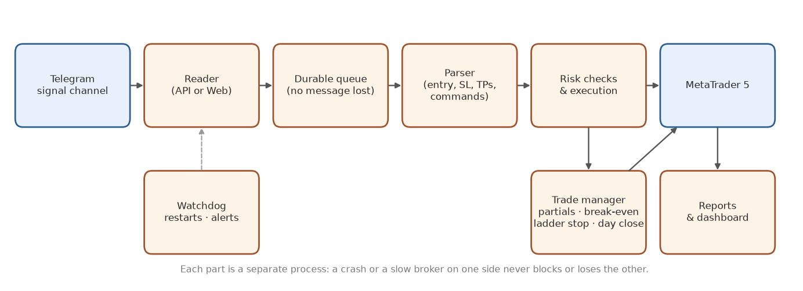
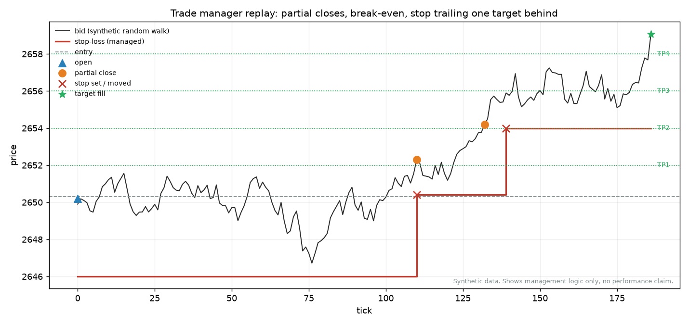
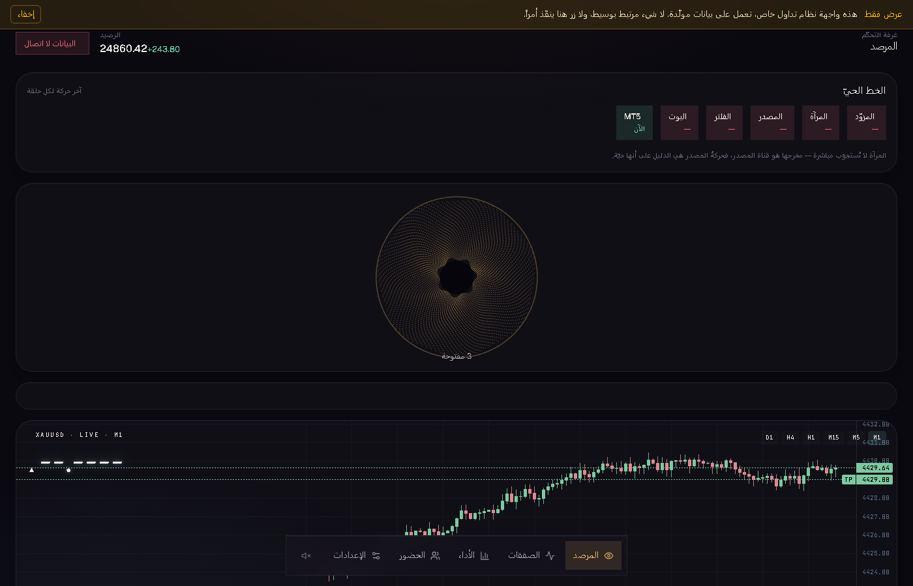

Telegram → MetaTrader 5 trade copier
It reads the trading signals your channel posts, sizes every trade from your risk, opens it on MetaTrader 5 within seconds, and then manages it the way a careful trader would: partial profits at the targets, the stop to break-even, a stop that follows the price target by target, and everything closed before the day ends. It runs unattended on a VPS and repairs itself.

What it does
Reads the channel
Through the Telegram API, or through Telegram Web for channels that allow no API access. Edits and replies to a call are followed too.
Understands the post
Entry, stop-loss and up to eight targets in several formats, plus follow-up commands: close, secure at entry, move the stop, take partial profit, half lot.
Sizes from risk
Lot from the stop distance and your risk per trade, rounded to the broker's steps; caps per trade, per signal and per day.
Manages the trade
Partial closes at the targets, break-even with a small lock, a stop that trails one or more targets behind, end-of-day close by the broker's clock.
Refuses bad orders
A stop on the wrong side of the entry, a price too far from the market, a typo in the post: rejected or corrected, never sent blindly.
Runs unattended
A watchdog restarts anything that stops, alerts on a silent feed, backs up sessions daily and sends a weekly report.
Trade management, step by step

Control panel

Every rule above was chosen by replaying hundreds of real past signals on tick-level prices before going live. The system itself is private; this page shows what it does, not its code.
Want it for your channel or your account?
Available as a ready-made setup on your VPS, adapted to your signal format, broker and risk rules, or as a custom build.
Ask on WhatsApp Email See my CV